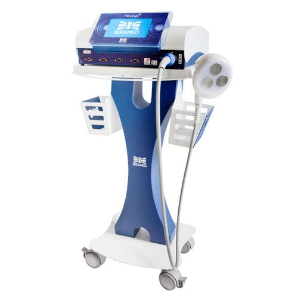
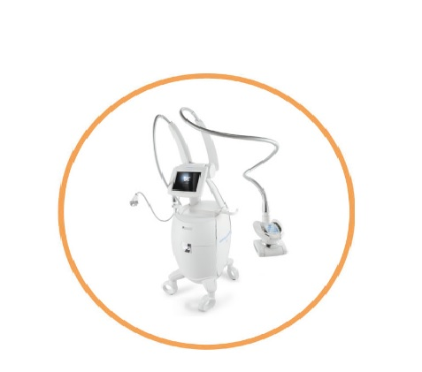
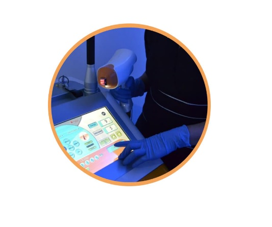
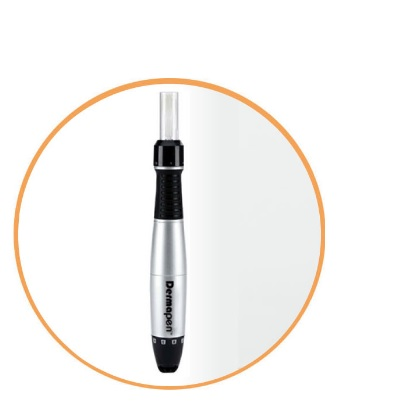

<!DOCTYPE html 5.0>
<html>
</html>
<head><title>magica escultura </title></head>
<body>
<p><body background="imagen/rosa.jpg"></p>

<center></center>
<center><table>
<tr><td><a href="index.html"><h1>Home</h1></td> <td><a href="tienda.html"><h1>tienda
</h1></td><td><h1><a href="contacto.html">contactanos</h1></td><td><h1>Tecnologia</h1></td><td><a href="testimonios.html">
<h1>Testimonios</h1></td><td><h1><a href="servicios.html">servicios</td></table></center>
<p><H2><center>Conoce nuestra tecnologia </p></h2></center>
<center></center><p><h2><font color="red">HECCUS TURBO</p></h2></font color="red">
En MÁGICA ESCULTURA contamos con la tecnología Heccus, la cual ha revolucionado el campo de la medicina estética debido a la integralidad que ofrece para combatir males estéticos comunes como: la celulitis, flacidez y grasa localizada. Su proceder no invasivo y sus excelentes resultados, lo convierten en una alternativa llamativa para la mayoría de mujeres.
Heccus combina la electrolipólisis con el ultrasonido y las corrientes Aussie, con el fin de eliminar la flacidez, y disminuir
 la molesta grasa localizada.
<p><font color="blue">¿Cómo actúa Heccus?</p></font color="blue">
A través del calor de ultrasonido, rompe las células de grasa y, por medio de la corriente Aussie, aumenta el metabolismo,
 facilitando la eliminación de la grasa en la deposición y orina.

<p><font color="blue">Beneficios</p></font color="blue">
Mejora de la flacidez, Definición los músculos, Activa el sistema linfático, Reduce la celulitis y grasa localizada.
<center><p><h2><font color="red">Endermology</p></h2></font color="red"></center>
<center></center>
<p>La Endermología reduce la retención de líquidos, favoreciendo el funcionamiento de los sistemas venoso y linfático y es capaz de moldear el cuerpo y reducir volumen, potenciando la destrucción de la adiposidad en los niveles más profundos.
<p>Es un masaje intenso del panículo adiposo mediante rodillos y aspiración de la superficie cutánea piel naranja, A través de la Endermología se tratan los tejidos conjuntivos cutáneos y subcutáneos.
Beneficios.
Indicada para mejorar la apariencia de la Celulitis, no quirúrgico
Se adapta perfectamente a cualquier condición y zona corporal y proporciona resultados que sorprenden por 
su efectividad tanto desde el punto de vista fisiológico como estético.</p>
<center><p><h2><font color="red">Depilash, Láser Diodo</p></h2></font color="red"></center>
<center></center>
En MÁGICA ESCULTURA S.A.S contamos con la mejor tecnología disponible para la depilación láser en Cali, permitiéndonos
 realizar un tratamiento seguro, rápido e indoloro: <p>Depilash, Láser Diodo de 808 nm, es operado por personal altamente 
 entrenado previamente por la empresa TENTREK distribuidores de la tecnología, y quienes constantemente realizan educación
 continuada a nuestros colaboradores.</p>
<p>La depilación láser Diodo consiste en lograr una eliminación del vello según las características individuales del paciente, 
mediante la aplicación de un haz de luz que se emite de forma uniforme y directa, absorbiendo la melanina del pelo y 
atrofiando el folículo piloso e impidiendo su regeneración, sin dañar el tejido circundante. 
En MÁGICA ESCULTURA S.A.S usamos un equipo muy seguro, confortable y de última tecnología, pues sus parámetros están 
configurados para llegar y captar el vello, mas no los tejidos circundantes, disminuyendo así el riesgo de quemadura. 
Además, posee una punta de zafiro que enfría a menos 5 grados centígrados, permitiendo que el paciente perciba una mínima o 
nula molestia durante el tratamiento. Estas características son una evolución de los equipos que comercialmente se han 
conocido en Colombia en los últimos 10 años.</p>
<p>Para obtener la depilación definitiva se han usado diferentes tecnologías que han evolucionado en eficiencia y seguridad. 
Inicialmente fueron usados la luz pulsada, IPL o depilación AFT con algunos resultados, pero sin brindar la 
solución permanente y haciendo que se llevarán más sesiones de tratamiento, con frecuentes quemaduras y como
 resultado apenas un adelgazamiento del vello, pero no su eliminación. Con la depilación láser DIODO se logra una atrofia 
 permanente del vello, con eficacia en todas las zonas del cuerpo y seguridad en pieles oscuras o bronceadas.
No es recomendable realizarlo en pacientes que presenten el vello rubio, blanco o rojizo. Personas con síndrome de ovario

 poliquístico pueden requerir más sesiones. Este tratamiento está contraindicado en pacientes que estén tomando medicamentos
 que causen fotosensibilidad como isotretinoína, enfermedades del colágeno, enfermedades autoinmunes, vitíligo entre otras.</p>

<p><font color="blue">Duración de cada sesión:</p></font color="blue">
30 minutos

<p><font color="blue">Cantidad de sesiones:</p></font color="blue">
Requiere de 8 a 10 por área, con un intervalo de entre una y otra de 30 a 45 días.

<font color="blue"><p>Zonas:</p></font color="blue">
Patillas, bigote, barba, pecho, espalda, axilas, línea alba, ombligo, bikini completo, línea perianal, muslos, piernas, dedos de manos y pies.
<center><p><h2><font color="red">Dermapen</p></h2></font color="red"></center>
<center></center>
<p>El Dermapen es un dispositivo de micro-agujas que funciona para afirmar, levantar y rejuvenecer la piel. Es un dispositivo electrónico aprobado por la FDA que utiliza múltiples agujas finas verticalmente para perforar la piel, a una determinada profundidad para cada zona y cada patología a tratar, provocando un estimulo que se traducirá en la producción de colágeno.</p>
<p>Es un tratamiento para fomentar la producción de colágeno propio del paciente (colágeno autólogo).Es un tratamiento ideal para la mejora de arrugas, cicatrices y estrías situadas en cualquier zona del cuerpo.</p>
<p><font color="blue">Beneficios</p></font color="blue">
<p>Reduce las líneas de expresión, las arrugas, minimiza las estrías, las cicatrices y las marcas por acné.</p>
<footer><center>
  <p>Contáctanos

+57 313 569 1363
+57 318 257 5425</p>
<p>contacto@magicaescultura.com</p>
<p>Cra 44 # 5c -122 local 101</p>
 </center></footer>